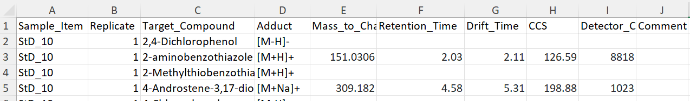
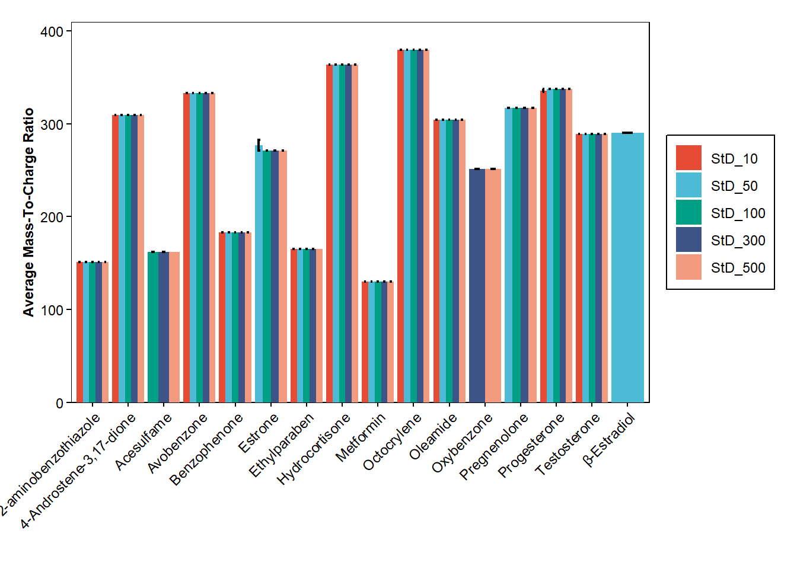
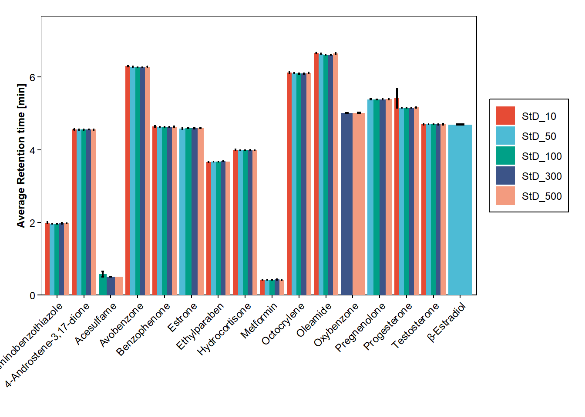
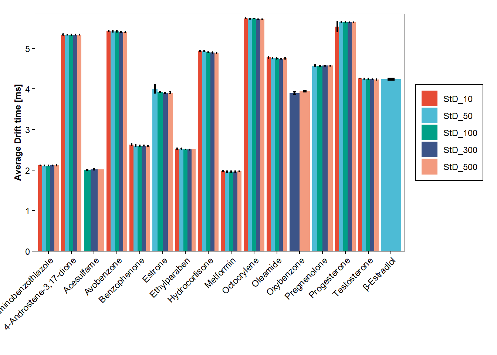
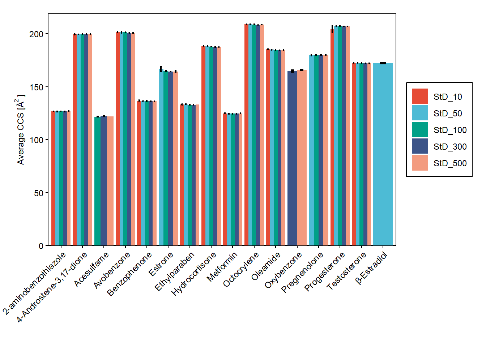
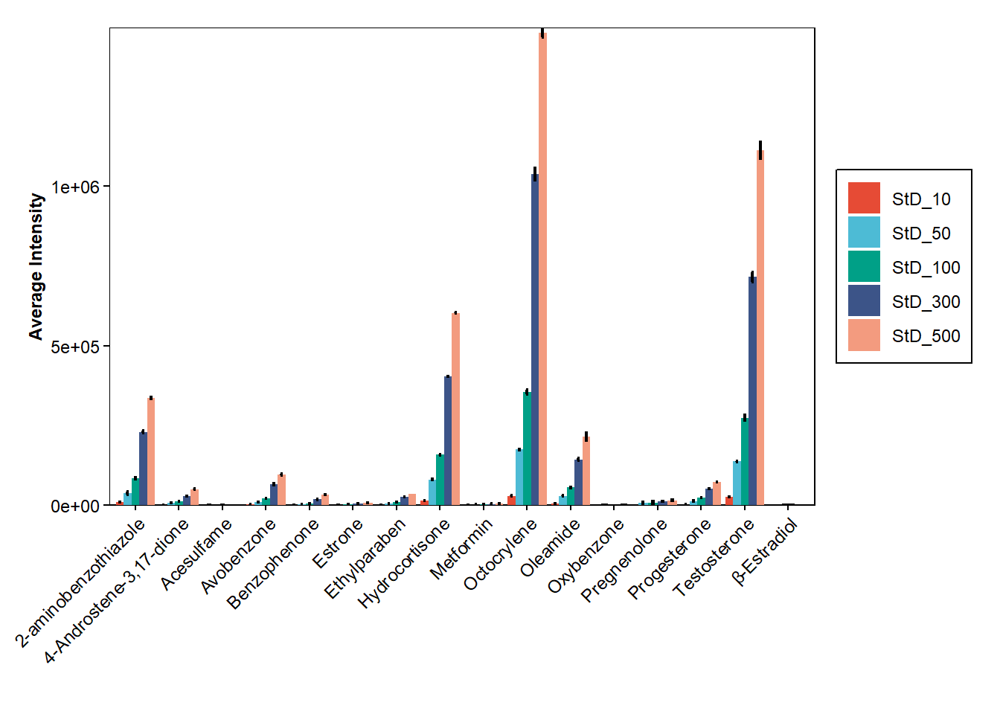
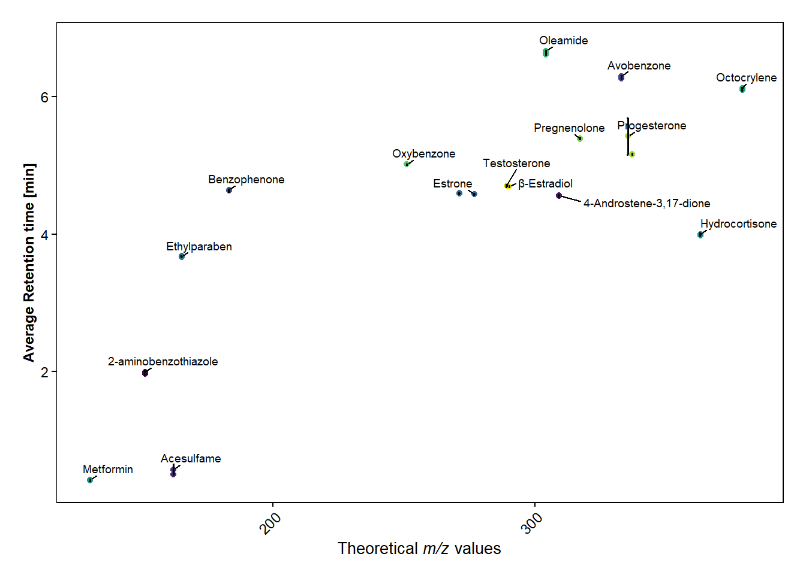

#Function to calculate the Mass Error with three digits
mass_error <- function(mz_theoretical,mz_meaured){
mass_error <- round((mz_theoretical-mz_meaured)/mz_theoretical*10^6, digits=3)
return(mass_error)
}4 Project
XXXX
New format of Excel-sheet to work better to import in RStudio. It includes one column with the samples name, replicate number, target compound, which adduct it was detected as, the measured Mass_To_Charge ratio (m/z), Retention time (RT), Drift time (DT), CCS, and detector count (Intensity). All the data obtained from UNIFI software. The last column is for adding comments to a specific target compound.
Each type of sample has its own sheet. Hence, the data shown in the Figure 1, are from measurements of one standard called StD B, whereas measurements of another standard has another sheet in the same Excel-file. The first sheet in the file is called Info and contains information of the samples. For example, StD B is measured in different concentrations (10, 50, 100, 300, and 500 ppb). In the data for StD B, the Sample Items are called StD_XX, where XX is the concentration. However, in Info, it is possible to find the name of the measurements (e.g. StD_10_240319), number of replicates, and which standard and concentration that was measured.

4.1 Loading of libraries
4.2 Functions
- \(MassError[ppm]=\frac{\textit{m/z}_{theretical}-\mathit{m/z}_{measured}}{\mathit{m/z}_{theoretical}}*10^6\)
- \(SEM=\frac{SD}{\sqrt{N}}\) , SD= Standard Deviation, N=number of samples
#Function to calculate the Standard Error of the Mean (SEM)
stderror <- function(x){
round(sd(x, na.rm =TRUE)/sqrt(length(x)),4)
}- Function for a Bar plot
bar_plot <- function(dataframe, xvalue, yvalue, fillvalue, error) {
xvalue <- enquo(xvalue) # Capture xvalue as a quosure
yvalue <- enquo(yvalue) # Capture yvalue as a quosure
fillvalue <- enquo(fillvalue) # Capture fillvalue as a quosure
error <- enquo(error) # Capture error as a quosure
p <- ggplot(data=dataframe, aes_string(x=quo_name(xvalue), y=quo_name(yvalue), fill=quo_name(fillvalue)))+
geom_bar(stat = "identity",position=position_dodge(0.9))+
geom_errorbar(aes(ymin=!!yvalue -!!error,
ymax=!!yvalue +!!error),
width=0.3, colour="black", size=0.8,position=position_dodge(0.9))+
scale_fill_npg()+
theme_minimal()+
theme(
panel.background = element_rect(fill = "white"), # Set white background
panel.grid.major = element_blank(), # Remove grid lines
panel.grid.minor = element_blank(), # Remove grid lines
axis.text = element_text(size = 9), # Increase font size of axis text
axis.title.y = element_text(size = 9,face = "bold"), # Make y-axis label bold and italic
axis.text.y = element_text(color = "black", size = 9), # Make x-axis text bold
axis.title.x = element_text(size = 10,face = "bold"),
axis.text.x = element_text(color = "black", size = 9, angle = 45, hjust=1), # Make x-axis text bold
axis.ticks.x = element_line(color = "black"), # Add ticks to x-axis in black color
axis.ticks.y = element_line(color = "black"), # Add ticks to y-axis in black color
plot.margin = margin(0.5, 0.5, 0.4, 0.5, "cm"), # Set plot margins
legend.text=element_text(size=9),
legend.background = element_rect(fill="white",
size=0.5, linetype="solid",
colour ="black"),
legend.title = element_blank(),
)
return(p)
}- Function for a Scatter plot
scatter_plot <- function(dataframe, xvalue, yvalue, colorvalue, error) {
xvalue <- enquo(xvalue) # Capture xvalue as a quosure
yvalue <- enquo(yvalue) # Capture yvalue as a quosure
colorvalue <- enquo(colorvalue) # Capture colorvalue as a quosure
error <- enquo(error) # Capture error as a quosure
p <- ggplot(data=dataframe, aes_string(x=quo_name(xvalue), y=quo_name(yvalue), color=quo_name(colorvalue)))+
geom_point()+
geom_errorbar(aes(ymin = !!yvalue - !!error,
ymax = !!yvalue + !!error),
width=0.7, colour="black", size=0.7) +
scale_color_viridis(discrete=TRUE)+
theme_minimal()+
theme(
panel.background = element_rect(fill = "white"), # Set white background
panel.grid.major = element_blank(), # Remove grid lines
panel.grid.minor = element_blank(), # Remove grid lines
axis.text = element_text(size = 9), # Increase font size of axis text
axis.title.y = element_text(size = 9,face = "bold"), # Make y-axis label bold and italic
axis.text.y = element_text(color = "black", size = 9), # Make x-axis text bold
axis.title.x = element_text(size = 10,face = "bold"),
axis.text.x = element_text(color = "black", size = 9, angle = 45, hjust=1), # Make x-axis text bold
axis.ticks.x = element_line(color = "black"), # Add ticks to x-axis in black color
axis.ticks.y = element_line(color = "black"), # Add ticks to y-axis in black color
plot.margin = margin(0.5, 0.5, 0.4, 0.5, "cm"), # Set plot margins
legend.text=element_text(size=9),
legend.background = element_rect(fill="white",
size=0.5, linetype="solid",
colour ="black"),
legend.title = element_blank(),
)
####### TRIED TO MAKE ERROR AN OPTIONAL, SO IT ONLY PLOTS ERRORBARS IF ERROR IS NOT NULL ##########
#if(!is.null(error)) {
#error <- enquo(error) # Capture error as a quosure
#p <- p + geom_errorbar(aes(ymin = !!yvalue - !!error,
# ymax = !!yvalue + !!error),
# width=0.7, colour="black", size=0.7)
#}
####### DOES NOT WORK #############################
return(p)
}- Calculate concentration from calibration curve: \(Concentration =\frac{Response-Intercept}{Slope}\)
cal_conc <- function(response, intercept, slope){
concentration <- (response-intercept)/slope
return(concentration)
}4.3 Target Compounds from UNIFI
This section is for data analysis when target compounds data (e.g. m/z, RT, DT, CCS, and intensity) has been obtained directly from UNIFI. Hence, the data has NOT been processed with e.g MS-DIAL, so there is not need to “find” the target compounds in a long list of features.
Importing the data
Two data sets are imported, one containing the measured data (data_hrms) and one with information of the target compounds (target_compounds), which contains the molecular formula, monoisotopic mass, and theoretical mass of the different adducts ([M+H]+, [M+Na]+, [M+NH4]+, and [M-H]-).
data_hrms <- read_excel("Data_HRMS_Format_TEST.xlsx",
sheet = "Data_StDB")
#glimpse(data_hrms)
target_compounds <- read_excel("Target_Compounds_StDB.xlsx")
#glimpse(target_compounds)Calculate the Mass Accuracy with the mass_error() function depending on which adduct the compound was found as and add the results in the data_hrms data frame.
#If the compounds in target_compounds and data_hrms are in the same order
data_hrms <- data_hrms |>
mutate(Mass_accuracy=case_when(Adduct == "[M+H]+" ~ mass_error(target_compounds$`[M+H]+`, Mass_to_Charge_Ratio),
Adduct == "[M+Na]+" ~ mass_error(target_compounds$`[M+Na]+`, Mass_to_Charge_Ratio),
Adduct == "[M+NH4]+" ~ mass_error(target_compounds$`[M+NH4]+`, Mass_to_Charge_Ratio),
Adduct == "[M-H]-" ~ mass_error(target_compounds$`[M-H]-`,Mass_to_Charge_Ratio) )) #If the compounds in target_compounds and data_hrms are not in the same order, can join the two data frames according to the compounds name and then calculate mass accuracy
data_hrms <- inner_join(data_hrms, target_compounds, by = c("Compound" = "Item name")) |>
mutate(Mass_accuracy=case_when(Adduct == "[M+H]+" ~ mass_error(`[M+H]+`, Mass_to_Charge_Ratio),
Adduct == "[M+Na]+" ~ mass_error(`[M+Na]+`, Mass_to_Charge_Ratio),
Adduct == "[M+NH4]+" ~ mass_error(`[M+NH4]+`, Mass_to_Charge_Ratio),
Adduct == "[M-H]-" ~ mass_error(`[M-H]-`,Mass_to_Charge_Ratio) )) |>
select(Sample_Item, Replicate, Compound, Adduct, Mass_to_Charge_Ratio, Retention_Time, Drift_Time, CCS, Detector_Counts, Mass_accuracy)Calculate the Average and SEM of m/z, Mass Accuracy, RT, DT, CCS, and intensity for each compound in each type of sample (Sample Item) with the mean() and SEM() functions.
data_hrms$Sample_Item <- factor(data_hrms$Sample_Item, levels=unique(data_hrms$Sample_Item)) #Convert Sample_Item to factor to be able to keep the original order of the data
data_hrms_average <-data_hrms |> filter(!is.na(Mass_to_Charge_Ratio))|>
group_by(Sample_Item, Compound) |>
summarise(Average_MZ=round(mean(Mass_to_Charge_Ratio, na.rm =TRUE),digits=3),
SEM_MZ=stderror(Mass_to_Charge_Ratio),
Average_MassAccuracy=round(mean(Mass_accuracy, na.rm =TRUE),digits=3),
SEM_MassAccuracy=stderror(Mass_accuracy),
Average_RT=round(mean(Retention_Time, na.rm =TRUE),digits=3),
SEM_RT=stderror(Retention_Time),
Average_DT=round(mean(Drift_Time, na.rm =TRUE),digits=3),
SEM_DT=stderror(Drift_Time),
Average_CCS=round(mean(CCS, na.rm =TRUE),digits=3),
SEM_CCS=stderror(CCS),
Average_intensity=round(mean(Detector_Counts, na.rm =TRUE),digits=3),
SEM_intensity=stderror(Detector_Counts)) |>
ungroup() |>
group_by(Compound)`summarise()` has grouped output by 'Sample_Item'. You can override using the
`.groups` argument.#glimpse(data_hrms_average)Plots using the bar_plot function.
bar_plot(data_hrms_average, Compound, Average_MZ, Sample_Item, SEM_MZ)+
labs(y = "Average Mass-To-Charge Ratio", x="")+
scale_y_continuous(expand = expansion(add=c(0,30)))Warning: `aes_string()` was deprecated in ggplot2 3.0.0.
ℹ Please use tidy evaluation idioms with `aes()`.
ℹ See also `vignette("ggplot2-in-packages")` for more information.Warning: Using `size` aesthetic for lines was deprecated in ggplot2 3.4.0.
ℹ Please use `linewidth` instead.Warning: The `size` argument of `element_rect()` is deprecated as of ggplot2 3.4.0.
ℹ Please use the `linewidth` argument instead.
bar_plot(data_hrms_average, Compound, Average_RT, Sample_Item, SEM_RT)+
labs(y = "Average Retention time [min]", x="")+
scale_y_continuous(expand = expansion(add=c(0,1)))
bar_plot(data_hrms_average, Compound, Average_DT, Sample_Item, SEM_DT)+
labs(y = "Average Drift time [ms]", x="")+
scale_y_continuous(expand = expansion(add=c(0,0.11)))
bar_plot(data_hrms_average, Compound, Average_CCS, Sample_Item, SEM_CCS)+
labs(y = expression("Average CCS [Å"^"2"~"]"), x="")+
scale_y_continuous(expand = expansion(add=c(0,10)))
bar_plot(data_hrms_average, Compound, Average_intensity, Sample_Item, SEM_intensity)+
labs(y = "Average Intensity", x="")+
scale_y_continuous(expand = expansion(add=c(0,100)))
Plots using the scatter_plot function.
scatter_plot(data_hrms_average, Average_MZ, Average_RT, Compound, SEM_RT)+
geom_text_repel(data=data_hrms_average |> distinct(Compound, .keep_all=TRUE),
aes(label=Compound),
size = 2.5,
point.padding = NA, # additional padding around each point
min.segment.length = 0, # draw all line segments
force=2,
nudge_x=3, nudge_y=0.1,
color="black"
)+
labs(y = "Average Retention time [min]", x=expression(paste("Theoretical ",italic("m/z"), " values")))+
theme(legend.position = "none")
scatter_plot(data_hrms_average, Average_MZ, Average_CCS, Compound, SEM_CCS)+
labs(y = "Average Drift time [min]", x=expression(paste("Theoretical ",italic("m/z"), " values")))If measured samples are standards of different concentrations, calibration curves can be plotted.
Plotting calibration curves of the concentration vs intensities to be able to visually see the regression. However, to obtain the Standard Error of the Slope and the Slope for calculation of Limit of Detection (LOD), no calibration curve needs to be plotted.
#End of the Sample_Item-names contains the concentrations in ppb, which is added to a new column
data_hrms_average <- data_hrms_average |>
mutate(Concentration = as.numeric(str_extract(Sample_Item, "\\d+")))
#Plot the calibrations curves for each compounds in separate plots. To each calibration curve is the R^2 added
ggplot(data=data_hrms_average, mapping=aes(x=Concentration, y=Average_intensity, colour=Compound))+
geom_errorbar(aes(ymin=Average_intensity-SEM_intensity, ymax=Average_intensity+SEM_intensity), width=3, size=0.6, colour="black")+
geom_point() +
geom_smooth(method="lm",
size=0.6,
se=FALSE,
linetype="dashed",
fullrange=TRUE,
aes(color=Compound))+
stat_cor(aes(label=..rr.label..), label.x=200, size=3, colour="black", r.digits = 5)+ #adds R^2
facet_wrap(~ Compound, scales="free")+ #separates the plots for each compound
scale_color_viridis(discrete=TRUE)+
theme_minimal()+
theme(
panel.background = element_rect(fill = "white"), # Set white background
panel.grid.major = element_blank(), # Remove grid lines
panel.grid.minor = element_blank(), # Remove grid lines
axis.text = element_text(size = 9), # Increase font size of axis text
axis.title.y = element_text(size = 9,face = "bold"), # Make y-axis label bold and italic
axis.text.y = element_text(color = "black", size = 9), # Make x-axis text bold
axis.title.x = element_text(size = 10,face = "bold"),
axis.text.x = element_text(color = "black", size = 9), # Make x-axis text bold
axis.ticks.x = element_line(color = "black"), # Add ticks to x-axis in black color
axis.ticks.y = element_line(color = "black"), # Add ticks to y-axis in black color
plot.margin = margin(0.5, 0.5, 0.4, 0.5, "cm"), # Set plot margins
legend.position = "none"
)+
labs(y = "Average Intensity", x="Concentration [ppb]")Warning: The dot-dot notation (`..rr.label..`) was deprecated in ggplot2 3.4.0.
ℹ Please use `after_stat(rr.label)` instead.`geom_smooth()` using formula = 'y ~ x'Warning: Computation failed in `stat_cor()`.
Caused by error in `cor.test.default()`:
! not enough finite observations# Obtain the Slope (a) and Intercept (b) for each calibration curve (y=ax+b)
regression_1 <- data_hrms_average |>
group_by(Compound) |>
do(tidy(lm(Average_intensity ~ Concentration, data = .))) |>
filter(term %in% c("Concentration", "(Intercept)")) |>
mutate(parameter = if_else(term == "Concentration", "Slope", "Intercept")) |>
select(Compound, parameter, estimate) |>
spread(parameter, estimate)
##### Obtain the Slope (a) for each calibration curve (y=ax+b)#####
#regression_1 <- data_hrms_average |>
# group_by(Compound) |>
# do(tidy(lm(Average_intensity ~ Concentration, data = .))) |>
# filter(term == "Concentration") |>
# select(Compound, Slope = estimate)
# Obtain the StDErrorY for each calibration curve
regression_2 <- data_hrms_average |>
group_by(Compound) |>
do(augment(lm(Average_intensity ~ Concentration, data = .))) |>
summarise(StdErrorY = sd(.resid)) |>
select(Compound, StdErrorY)
# Combines the two data frames with Slope and StDErrorY, and calculate the LOD and LOQ for them
regression_data_hrms_average <- regression_1 |>
inner_join(regression_2, join_by(Compound)) |>
mutate(`LOD_[ppb]`= round(3.3*StdErrorY/Slope,digits=3)) |>
mutate(`LOQ_[ppb]`= round(10*StdErrorY/Slope,digits=3))#Calculate the concentration from the calibration curve for selected Sample_Item and Replicate
sample <- "StD_300"
nr_replicate <- 1
cal_conc_data_hrms <- data_hrms |>
filter(Sample_Item == sample & Replicate == nr_replicate) |>
semi_join(regression_data_hrms_average, by = "Compound") |>
mutate(Calculated_Conc = cal_conc(Detector_Counts, regression_data_hrms_average$Intercept, regression_data_hrms_average$Slope))
#Create a table with the calculated concentrations
gt_tab <- cal_conc_data_hrms |> filter(!is.na(Calculated_Conc))|>
select(Compound, Mass_to_Charge_Ratio, Retention_Time, Drift_Time, CCS, Calculated_Conc) |>
gt() |>
tab_options(table.font.color="black")|>
tab_header(
title=md("**Calculated Concentrations**"), #**to make bold
) |>
fmt_number(columns = c(Mass_to_Charge_Ratio, Retention_Time, Drift_Time, CCS, Calculated_Conc), decimals=3) |> #to formate numbers, can select specific columns to display certain nr. of deicmals for example.
cols_label(
Mass_to_Charge_Ratio = md("*m/z*"),
Retention_Time = md("Retention Time <br>[min]"),
Drift_Time = md("Drift Time <br>[ms]"),
CCS = md("Å^2^"),
Calculated_Conc = md("Calculated Concentrations")
)
gt_tab | Calculated Concentrations | |||||
| Compound | m/z | Retention Time [min] |
Drift Time [ms] |
Å2 | Calculated Concentrations |
|---|---|---|---|---|---|
| 2-aminobenzothiazole | 151.031 | 1.970 | 2.110 | 126.520 | 318.219 |
| 4-Androstene-3,17-dione | 309.181 | 4.560 | 5.330 | 199.330 | 280.012 |
| Acesulfame | 161.986 | 0.500 | 2.030 | 122.290 | 339.575 |
| Avobenzone | 333.144 | 6.270 | 5.410 | 201.040 | 346.053 |
| Benzophenone | 183.079 | 4.630 | 2.610 | 136.290 | 279.538 |
| Estrone | 271.168 | 4.590 | 3.900 | 164.320 | 354.133 |
| Ethylparaben | 165.055 | 3.680 | 2.510 | 132.870 | 335.132 |
| Hydrocortisone | 363.215 | 3.990 | 4.910 | 187.490 | 320.619 |
| Metformin | 130.107 | 0.430 | 1.970 | 124.750 | 310.067 |
| Octocrylene | 379.237 | 6.100 | 5.720 | 208.560 | 344.356 |
| Oleamide | 304.260 | 6.620 | 4.750 | 184.470 | 333.817 |
| Oxybenzone | 251.066 | 5.010 | 3.890 | 164.410 | 417.382 |
| Pregnenolone | 317.247 | 5.390 | 4.560 | 179.710 | 272.946 |
| Progesterone | 337.212 | 5.160 | 5.640 | 206.850 | 332.579 |
| Testosterone | 289.215 | 4.700 | 4.240 | 172.150 | 303.769 |
#gt_tab |> gtsave(filename = "tab_1.html") #saves the table in HTML format
#gt_tab |> gtsave(filename = "tab_1.tex") #saves the table in LaTEX format
#gt_tab |> gtsave(filename = "tab_1.docx") #saves the table in WORD format4.4 Processed Data MS-DIAL
This section is for data that has been exported from UNIFI and then been processed in MS-DIAL. Hence, the output file contains many features and the target compounds needs to be extracted from the processed output file by comparison with expected data (e.g. theoretical m/z of different adducts).